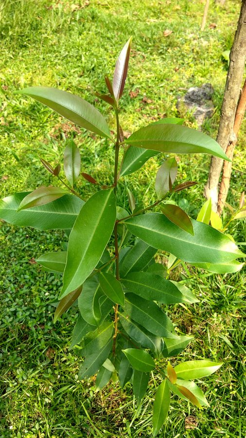

जामुनJamun
Syzygium cumini · Myrtaceae · FLR-0036

- Scientific name
- Syzygium cumini (L.) Skeels
- Family
- Myrtaceae
- Hindi
- जामुन
- Status here
- native
- IUCN
- LC
When to look कब देखें
Present all year.
जामुन / Jamun
Syzygium cumini (L.) Skeels — Myrtaceae
जामुन — हमारे ग्रामीण क्षेत्रों का एक विशाल, छायादार और सदाबहार वृक्ष है जो अपने स्वादिष्ट, गहरे बैंगनी-काले रंग के फलों (berries) के लिए अत्यंत प्रसिद्ध है। यह पेड़ आमतौर पर सड़कों के किनारे, बागों में और खेतों की मेड़ों पर पाया जाता है। इसके फल जून-जुलाई में मानसून की पहली बारिश के समय पकते हैं, जिनका सेवन करने पर जीभ और होंठ बैंगनी रंग से रंग जाते हैं — यह ग्रामीण बच्चों के लिए गर्मी के मौसम का एक यादगार अनुभव है। जामुन न केवल एक लोकप्रिय फल है, बल्कि पारंपरिक चिकित्सा (आयुर्वेद) में इसके बीजों और छाल का उपयोग मधुमेह (diabetes) के नियंत्रण के लिए व्यापक रूप से किया जाता है।
Quick Identification त्वरित पहचान
| Feature | Description |
|---|---|
| Size & Shape | Large evergreen tree (15–25 m tall) with a dense, rounded, shady canopy |
| Bark & Trunk | Smooth, light grey bark on young branches, becoming rough and dark grey on mature trunks |
| Leaves | Opposite, simple, oblong-oval leaves with a smooth surface, emitting a turpentine-like smell when crushed |
| Flowers | Small, greenish-white, sweet-scented flowers appearing in dense branched clusters (cymes) |
| Fruit & Seeds | Smooth, oblong or ovoid berries (1.5–3.5 cm long), green turning dark purple-black when ripe, with a single large seed |
Field tip: Look for oblong, leathery leaves arranged opposite each other, which release a distinct fresh, fruity aroma when crushed. During early monsoon (June–July), the ground beneath the tree is typically stained purple with fallen ripe berries.
Morphology आकारिकी
Biometrics (typical measurements in the Gangetic plain):
| Feature | Measurement |
|---|---|
| Tree height | 15–25 m |
| Leaf length | 7–15 cm |
| Leaf width | 4–8 cm |
| Flower diameter | 4–6 mm |
| Fruit dimensions | 1.5–3.5 cm long, 1–2.5 cm wide |
Habit: Large evergreen tree with a close, dense crown and smooth branches. Trunk is short and thick, dividing into large branches close to the ground.
Bark: Slaty or light grey, smooth initially, later becoming cracked and dark grey on old trunks, peeling in small woody flakes.
Leaves: Opposite, simple, oblong-lanceolate or elliptic-oval, 7–15 cm long and 4–8 cm wide. Apex is briefly pointed. The leaves are smooth, leathery, and shiny dark green above, paler beneath, with numerous parallel veins.
Flowers: Small, 4–6 mm across, arranged in terminal or axillary branched cymes. The flowers are greenish-white, with a cup-shaped calyx and multiple protruding stamens, giving them a fuzzy appearance.
Fruit & Seeds: The fruit is an ovoid or oblong berry, 1.5–3.5 cm long, containing a single large, green seed. The fruit skin is thin, smooth, and ripens from green to pink, then to deep purple-black. The pulp is pinkish-white, juicy, and highly astringent.
Ecological Role पारिस्थितिक भूमिका
Monsoon food bonanza. Jamun fruits ripen in massive quantities just before and during the monsoon, serving as a critical food source.
- Wildlife gatherers: The ripe fruits are eaten in large quantities by many birds in this atlas, including the Common Myna (BRD-0006), Rose-ringed Parakeet (BRD-0008), Asian Koel (BRD-0014), and Red-vented Bulbul (BRD-0017).
- Seed dispersal: Fruit bats (such as the Indian Flying Fox) feed on the pulp at night and carry the fruits away, dispersing the seeds across wide areas.
- Soil fertilizer: The fallen decaying fruits enrich the soil organic matter under the canopy, attracting soil invertebrates and earthworms.
Life Cycle / Phenology जीवन चक्र
- Germination: Seeds germinate quickly on moist soil during the monsoon; seeds lose viability if kept dry for long.
- Growth: Moderately fast growing, reaching maturity in 15–20 years.
- Leaf flush: New pinkish-green leaves appear in February–March.
- Flowering: March to May, attracting thousands of honeybees.
- Fruiting: June to July, ripening rapidly with the first monsoon showers.
Host Plants or Prey आहार
Prey / Beneficiaries:
- Insects: Pollinated by honeybees (Apis spp.), hoverflies, and wasps.
- Birds: Fruits are consumed by parakeets, bulbuls, starlings, and cuckoos.
- Mammals: Squirrels and fruit bats consume the ripe berries.
Predators / Natural Enemies शत्रु
- Pests: Leaf-rolling caterpillars defoliate young saplings.
- Fungi: Leaf spot fungi (Neofusicoccum spp.) affect leaves in humid conditions.
- Human impact: Over-harvesting of fruits from wild trees reduces food for wildlife.
Agricultural / Human Relevance कृषि और मानव संबंध
Traditional and Ethnobotanical Use
Jamun is one of the most culturally and medicinally important trees in eastern Uttar Pradesh:
- Specific medicinal preparations:
- Diabetes Mellitus: The dry seeds of the fruit are ground into a fine powder (known as Jamun Guthli Churna) and taken daily with water (1–2 grams) to lower blood glucose levels (a well-documented hypoglycemic effect).
- Diarrhoea & Sore throat: A decoction of the fresh inner bark is used as a throat gargle to relieve sore throat or taken orally to control acute diarrhoea.
- Indigestion & Stomach ache: The fresh juice of the fruit is fermented to prepare a traditional black vinegar (known locally as Jamun Sirka), taken after meals to improve digestion and relieve gas.
- Religious or cultural significance in eastern UP: Associated with Lord Krishna, who is described as Jambuvarna (having the color of the Jamun fruit). According to local lore, Lord Rama survived on forest fruits, including Jamun, during his exile, making it a sacred forest tree.
- Traditional ecological or seasonal knowledge: The purple staining of the tongue after eating Jamun is used as a popular seasonal marker. The ripening of the fruit is a reliable indicator of the onset of the Southwest Monsoon in late June.
Expected Locally स्थानीय रूप से अपेक्षित
Not a field record. Written from published accounts for eastern Uttar Pradesh. No confirmed local sighting yet — if you have seen it, that is what the atlas needs.
अभी तक स्थानीय पुष्टि नहीं। यह विवरण प्रकाशित स्रोतों से है, किसी अवलोकन से नहीं।
Abundant in the Basti district, lining the old highways and village tracks. Large trees are planted in home gardens (bari) for shade and fruit. During June, temporary roadside stalls spring up along the roads where local villagers sell fresh Jamun fruits sprinkled with black salt. It is highly valued as a hardy tree that survives waterlogging along the borders of flooded rice fields.
Distribution वितरण
Global range: Native to the Indian subcontinent and adjacent regions of Southeast Asia, including Pakistan, Nepal, India, Bangladesh, Sri Lanka, and Myanmar. Widespread as an introduced species in tropical Africa and the Pacific.
In India: Widespread in plains and river basins, cultivated state-wide.
In Uttar Pradesh: Abundant in all plains districts, cultivated in orchards and lining state canals.
In Basti district / eastern UP: Abundant year-round in village groves and orchards.
Research Questions शोध प्रश्न
Anyone can investigate these | कोई भी इन प्रश्नों की जाँच कर सकता है
- Which bird species in your garden are the most frequent consumers of Jamun fruits? / आपके बगीचे में जामुन के फलों को सबसे अधिक खाने वाले पक्षी कौन से हैं? — Count bird visits to a fruiting tree.
- How long do Jamun seeds remain viable after being discarded from the fruit? — Test germination rates of seeds kept dry for 1, 2, and 4 weeks.
- Does the pH of the soil change directly under a mature Jamun canopy due to fallen fruits? — Measure soil acidity under the canopy vs. open fields.
- How do local farmers protect Jamun orchards from fruit-eating bats during the harvest season? — Survey traditional deterrent methods used in village orchards.
- What is the average yield of fruit from a mature roadside Jamun tree in your area? / आपके क्षेत्र में सड़क किनारे एक परिपक्व जामुन के पेड़ से फल की औसत उपज कितनी होती है? — Interview local fruit collectors.
Similar Species मिलती-जुलती प्रजातियाँ
| Species | How to tell apart | हिंदी |
|---|---|---|
| Wild Jamun (Syzygium heyneanum) | Leaves narrower; fruits smaller, ovoid, and less fleshy; found in riverbeds and wet forests | जल जामुन — पतले पत्ते और छोटे फल |
| Guava (Psidium guajava) | Leaves are rough and hairy below; flowers larger; fruits large, yellow-green with many seeds | अमरूद — खुरदुरे पत्ते और बड़े फल |
| native Babool (Vachellia nilotica) | Bipinnate compound leaves; yellow flower balls; has long white thorns | बबूल — कांटेदार, छोटे पत्ते |
Field rule: Large evergreen tree with opposite, smooth, oblong leaves smelling of turpentine when crushed, greenish-white flowers, and purple-black ovoid berries in June–July identify the Jamun tree.
Taxonomy & Classification वर्गीकरण
Original description. Carl Linnaeus described this species as Myrtus cumini in 1753 in his work Species Plantarum (Vol. 1, p. 471). It was transferred to the genus Syzygium by Homer Collar Skeels in 1912 in the U.S. Department of Agriculture Bureau of Plant Industry Bulletin (No. 248, p. 25). The genus name Syzygium is derived from the Greek syzygos, meaning paired or yoked, referring to the opposite leaves.
Subspecies. Monotypic in the region.
Family and order placement. Placed in the order Myrtales, family Myrtaceae (myrtle family).
Phylogenetic notes. Syzygium cumini is closely related to other commercial spice trees, including the clove tree (Syzygium aromaticum).
IUCN status rationale. Evaluated as Least Concern (LC). Culturally and economically protected, widely cultivated, and stable across its large geographic range.
Photo Gallery फोटो गैलरी
References संदर्भ
- Linnaeus, C. (1753). Species Plantarum. Laurentius Salvius, Holmiae, p. 471.
- Skeels, H.C. (1912). U.S. Dept. of Agriculture Bureau of Plant Industry Bulletin. No. 248, p. 25. [generic transfer]
- Brandis, D. (1906). Indian Trees. Archibald Constable & Co., London.
- Sahni, K.C. (1998). The Book of Indian Trees. Oxford University Press, New Delhi.
- IUCN Red List (2024). Syzygium cumini. Ver. 2024.
- GBIF Occurrence Data — Syzygium cumini, Uttar Pradesh (2010–2025).
Source file: species/flora/trees/jamun.md